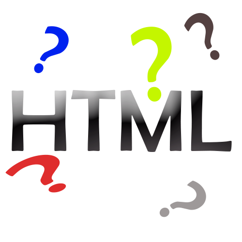

O que é HTML:
HTML é a sigla de HyperText Markup Language, expressão inglesa que significa "Linguagem de Marcação de Hipertexto". Consiste em uma linguagem de marcação utilizada para produção de páginas na web, que permite a criação de documentos que podem ser lidos em praticamente qualquer tipo de computador e transmitidos pela internet. Para escrever documentos HTML não é necessário mais do que um editor de texto simples e conhecimento dos códigos que compõem a linguagem. Os códigos (conhecidos como tags) servem para indicar a função de cada elemento da página Web. Os tags funcionam como comandos de formatação de textos, formulários, links (ligações), imagens, tabelas, entre outros.
Os browsers (navegadores) identificam as tags e apresentam a página conforme está especificada. Um documento em HTML é um texto simples, que pode ser editado no Bloco de Notas (Windows) ou Editor de Texto (Mac) e transformado em hipertexto.
A linguagem HTML foi criada por Tim Barners Lee na década de 1990. As especificações da linguagem são controladas pela W3C (World Wide Web Consortium).As versões de evolução da HTML incluem XHTML (uma linguagem com sintaxe mais rigorosa, baseada em XML) e HTML5 (quinta versão da HTML que traz novos recursos, principalmente a manipulação de conteúdo gráfico e multimídia).
Veja também o significado de HTTP.
Data de atualização: 07/12/2018.
REFERENCIA: https://www.significados.com.br/
